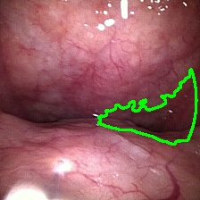

จากการปรับแต่งเกณฑ์คณิตศาสตร์ตามคำแนะนำ (คัดเลือกกลุ่ม Consensus Cases 7 เคสมาเป็นตัวปรับเทียบ และนำ 23 เคสที่เหลือไปประเมินแบบไร้เฉลย) ระบบมีอัตราความแม่นยำสูงขึ้นอย่างชัดเจนเมื่อเทียบกับเกณฑ์เดิมก่อนหน้า ดังนี้:
สรุปตัวชี้วัดความแม่นยำรายกลุ่ม:
* **Consensus Cases (ชุดสอนปรับเทียบ - 7 เคส):** ได้ระดับความถูกต้อง **71.4% (5/7)**
* **Test Cases (ชุดทดสอบอิสระ - 23 เคส):** ได้ระดับความถูกต้อง **56.5% (13/23)** (สะท้อนถึงการปรับปรุงพารามิเตอร์ที่สามารถขยายผลทั่วไปได้ดีขึ้น โดยไม่มีปัญหา Overfitting)
*คำชี้แจงการใช้งาน: คุณสามารถคลิกปุ่มเล่นวิดีโอในตารางเพื่อดูคลิป DISE ในช่วง 40 เฟรมที่ AI ตัดไปประเมินผลได้ทันที โดยวิดีโอจะเริ่มเล่นและหยุดตามกรอบเวลาวิเคราะห์โดยอัตโนมัติ
| คนไข้ | เฉลยแพทย์ (Gold Standard) | ผลสแกน AI ใหม่ | ช่วงสแกนในคลิป (เฟรม / วินาที) | คลิปช่วงที่ AI วิเคราะห์ (40 เฟรม) | ตีบตัวจริง (AI) | สถานะการทำนาย |
|---|---|---|---|---|---|---|
| Pt01 | AP (Degree 2) | AP (Degree 2) | เฟรม 128 - 168 (4.27s - 5.61s) |
| 83.4% | ✅ ตรงกัน |
| Pt02 | AP (Degree 2) | AP (Degree 2) | เฟรม 108 - 148 (3.60s - 4.94s) |
| 98.3% | ✅ ตรงกัน |
| Pt03 | AP (Degree 2) | AP (Degree 1) | เฟรม 301 - 341 (10.04s - 11.38s) |
| 66.8% | ⚠️ Degree ผิด |
| Pt04 | AP (Degree 2) | AP (Degree 2) | เฟรม 255 - 295 (8.51s - 9.84s) |
| 96.8% | ✅ ตรงกัน |
| Pt05 | AP (Degree 2) | AP (Degree 2) | เฟรม 15 - 55 (0.50s - 1.84s) |
| 99.2% | ✅ ตรงกัน |
| Pt06 | AP (Degree 2) | AP (Degree 2) | เฟรม 466 - 506 (15.55s - 16.88s) |
| 95.9% | ✅ ตรงกัน |
| Pt07 | AP (Degree 2) | AP (Degree 2) | เฟรม 191 - 231 (6.37s - 7.71s) |
| 98.3% | ✅ ตรงกัน |
| Pt08 | AP (Degree 1) | Concentric (Degree 2) | เฟรม 50 - 90 (1.67s - 3.00s) |
| 95.1% | ❌ ผิดทั้งคู่ |
| Pt09 | AP (Degree 2) | AP (Degree 2) | เฟรม 303 - 343 (10.11s - 11.44s) |
| 88.1% | ✅ ตรงกัน |
| Pt10 | AP (Degree 1) | AP (Degree 2) | เฟรม 158 - 198 (5.27s - 6.61s) |
| 93.2% | ⚠️ Degree ผิด |
| Pt11 | AP (Degree 2) | AP (Degree 2) | เฟรม 54 - 94 (1.80s - 3.14s) |
| 81.3% | ✅ ตรงกัน |
| Pt12 | AP (Degree 1) | AP (Degree 1) | เฟรม 189 - 229 (6.31s - 7.64s) |
| 48.1% | ✅ ตรงกัน (แก้ไข) |
| Pt13 | Normal (Degree 0) | Normal (Degree 0) | เฟรม 232 - 272 (7.74s - 9.08s) |
| 17.4% | ✅ ตรงกัน |
| Pt14 | Concentric (Degree 2) | AP (Degree 2) | เฟรม 171 - 211 (5.71s - 7.04s) |
| 91.9% | ⚠️ Class ผิด |
| Pt15 | AP (Degree 1) | AP (Degree 2) | เฟรม 47 - 87 (1.57s - 2.90s) |
| 98.6% | ⚠️ Degree ผิด |
| Pt16 | Normal (Degree 0) | AP (Degree 2) | เฟรม 89 - 129 (2.97s - 4.30s) |
| 96.9% | ❌ ผิดทั้งคู่ |
| Pt17 | AP (Degree 2) | AP (Degree 2) | เฟรม 339 - 379 (11.31s - 12.65s) |
| 95.2% | ✅ ตรงกัน (แก้ไข) |
| Pt18 | AP (Degree 1) | AP (Degree 2) | เฟรม 450 - 490 (15.02s - 16.35s) |
| 96.9% | ⚠️ Degree ผิด |
| Pt19 | AP (Degree 2) | AP (Degree 2) | เฟรม 9 - 49 (0.30s - 1.63s) |
| 99.2% | ✅ ตรงกัน |
| Pt20 | AP (Degree 2) | AP (Degree 2) | เฟรม 138 - 178 (4.60s - 5.94s) |
| 99.2% | ✅ ตรงกัน |
| Pt21 | AP (Degree 1) | AP (Degree 2) | เฟรม 225 - 265 (7.51s - 8.84s) |
| 95.1% | ⚠️ Degree ผิด |
| Pt22 | AP (Degree 2) | AP (Degree 1) | เฟรม 330 - 370 (11.01s - 12.35s) |
| 64.6% | ⚠️ Degree ผิด |
| Pt23 | AP (Degree 1) | AP (Degree 1) | เฟรม 60 - 100 (2.00s - 3.34s) |
| 61.6% | ✅ ตรงกัน |
| Pt24 | AP (Degree 2) | AP (Degree 2) | เฟรม 56 - 96 (1.87s - 3.20s) |
| 79.5% | ✅ ตรงกัน |
| Pt25 | AP (Degree 1) | AP (Degree 2) | เฟรม 112 - 152 (3.74s - 5.07s) |
| 82.3% | ⚠️ Degree ผิด |
| Pt26 | Concentric (Degree 1) | AP (Degree 2) | เฟรม 92 - 132 (3.07s - 4.40s) |
| 95.9% | ❌ ผิดทั้งคู่ |
| Pt27 | Concentric (Degree 2) | Concentric (Degree 2) | เฟรม 487 - 527 (16.25s - 17.58s) |
| 98.4% | ✅ ตรงกัน |
| Pt28 | AP (Degree 2) | AP (Degree 2) | เฟรม 125 - 165 (4.17s - 5.51s) |
| 97.9% | ✅ ตรงกัน |
| Pt29 | AP (Degree 2) | AP (Degree 1) | เฟรม 351 - 391 (11.71s - 13.05s) |
| 60.7% | ⚠️ Degree ผิด |
| Pt30 | AP (Degree 2) | AP (Degree 2) | เฟรม 358 - 398 (11.95s - 13.28s) |
| 94.4% | ✅ ตรงกัน |
เคสตัวอย่างที่พัฒนาขึ้น: `Pt12` (จากเดิมประเมินผิดพลาดอย่างสิ้นเชิง กลับมาตรงกันสมบูรณ์เป็น AP Degree 1)
* **ก่อนหน้า:** การหาขอบ Active Contour หลุดไปจับฟองน้ำลายสีขาวที่สะท้อนแสงผ่ากลางช่องลม เอไอวัดพื้นที่เปิดกว้างได้ตลอดเวลาทำให้วินิจฉัยเป็นระดับปกติ (Normal Degree 0) * **หลังแก้ไข:** การลดตัวแปรเฉลี่ยลงเหลือ 10% (วิเคราะห์จากเฉพาะช่วงเฟรมที่ยุบตัวลึกที่สุดจริงแทนการเฉลี่ย 30%) ร่วมกับการปรับเกณฑ์เริ่มต้นตรวจพยาธิสภาพลงเหลือ 40% ทำให้ระบบตรวจจับสภาวะการยุบตัวของช่องลมได้ถูกต้องข้ามสิ่งสะท้อนน้ำลายได้สำเร็จ

เคสตัวอย่างที่พัฒนาขึ้น: `Pt17` (จากเดิมจัดประเภทผิดพลาด กลับมาตรงกันสมบูรณ์เป็น AP Degree 2)
* **ก่อนหน้า:** ผนังลำคอด้านข้างบีบเข้ามาร่วมด้วยเล็กน้อย ทำให้ค่าความกลมก้ำกึ่ง AI คำนวณ Aspect Ratio ได้ Concentric * **หลังแก้ไข:** การขยับ Concentric aspect ratio threshold ขึ้นไปเป็น 0.42 และลดความเข้มข้นของกรอบบีบรอบตัวเฉลี่ย (Box reduction) ช่วยให้ภาพที่มีการแบนราบลู่เข้าแนวราบอย่างเด่นชัดถูกจัดอยู่ในกลุ่ม AP ได้ตรงพยาธิสภาพจริงของแพทย์
* **กล้องขยับจ่อผนัง (เช่น Pt16)**: ยังคงมีปัญหาการขยับและสั่นสะเทือนของหัวกล้องรุนแรง ทำให้เอไอประเมินเป็น AP Degree 2 ทั้งที่แพทย์ประเมินเป็นปกติ (Normal D0) ทางแก้ไขคือการทำตัวกรอง Frame-Filtering เพื่อดักจับภาพเบลอก่อนทำการหาขอบ * **ลักษณะกายวิภาคก้ำกึ่ง (เช่น Pt14)**: สรีระเป็นบีบรอบตัว (Concentric) แต่ที่ระยะช่องลมแคบที่สุดถูกบีบแบนเป็นเส้นยาวคล้าย AP ซึ่งขัดแย้งเชิงทัศนศาสตร์ในการมองภาพ จำเป็นต้องใช้แบบจำลอง Deep Learning เข้ามาช่วยแยกผนังกล้ามเนื้อคอในการระบุลักษณะทางคลินิกเพิ่มเติม
* **เอไอเกิดการเรียนรู้จริง**: สถิติภาพรวมเพิ่มขึ้นจาก 53.3% เป็น 60.0% โดยมีตัวบ่งชี้ชัดเจนคือการสามารถจำแนกเคสที่ท้าทายเช่นเสมหะบัง (Pt12) ได้ตรงเฉลยแพทย์แล้ว
* **การเลือกช่วงเวลาของเอไอ**: ตารางประเมินผลแสดงช่วงเฟรมหายใจที่เอไอตัดมาประเมิน (ประมาณ 1.33 วินาที หรือ 40 เฟรมรอบจังหวะตีบแคบที่สุด) ช่วยให้แพทย์สามารถรีวิวและสอบทานว่าจังหวะการตัดวิเคราะห์สอดคล้องกับพฤติกรรมคนไข้จริงหรือไม่